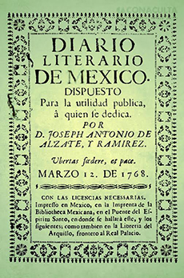
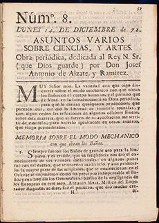

Referencias
- Cifuentes L. J. P. Torres-García y M. Frías. 2003. El Océano y sus recursos. V1. Bentos y necton. Serie: La ciencia para todos. Fondo de Cultura Económica, México. 407 pp.
- Franco L. 2004. Literatura hispanoamericana. Limusa, México. 460 pp.
- Kubitzki K. 2007. The Families and Genera of vascular plants. Volume IX Flowering Plants Eudicots. Springer, Alemania. 509 pp.
- Mendieta Z. H. 2002. La vida de un divulgador de la ciencia: José Antonio Alzate y Ramírez. El muégano divulgador. Dirección General de Divulgación de la Ciencia, UNAM, número 16: 5-6.
- Saladino G. A. 2001. El sabio: José Antonio Alzate y Ramírez de Santillana. Universidad Autónoma del Estado de México, México. 92 pp.
José Antonio Alzate
1737 - 1799
El género Alzatea, es el nombre que un grupo de investigadores de la Real Expedición Botánica al Perú, dieron a un grupo de árboles y arbustos distribuidos en el centro y sur de América, en honor a José Antonio Alzate.
José Antonio Alzate y Ramírez nació en 1737 en Ozumba, estado de México, y murió en 1799. Fue un sabio sacerdote que se interesó por el estudio de las matemáticas, física, astronomía y las ciencias naturales. Su vida religiosa inició en el Colegio de San Ildefonso bajo la orden de los jesuitas, y más adelante, ingresó a la Real y Pontificia Universidad de México donde obtuvo el bachillerato en artes seguido por el bachillerato en teología.
Alzate es reconocido porque además de interesarse por la generación de nuevos conocimientos a través de la observación y la experimentación, se preocupó seriamente porque éstos resultaran de alguna utilidad para los habitantes. Como parte de esta preocupación por vincular la ciencia con la sociedad, se convirtió en el iniciador de la divulgación científica en México y fue uno de los grandes periodistas del siglo XVIII del país. Entre sus publicaciones científicas más importantes se encuentran: Asuntos varios sobre ciencias y artes, Observaciones sobre la física, historia natural y artes útiles y Gaceta de México. En ellas incluía información sobre novedades científicas y literarias de su época, así como variados aspectos científicos, muchos de ellos dedicados a la medicina, tema sobre el cual Alzate escribió más de 50 artículos.
En su honor se formó en 1884 la Sociedad Científica Antonio Alzate que en 1935 se convirtió en la Academia Nacional de Ciencias de México.
Aportación

Número uno del periódico Diario Literario de México / CONACULTA

Asuntos varios sobre ciencias, y artes. Alzate y Ramirez, José Antonio - 1772
Naturalistas Siglo XVIII
Francisco Clavijero- José Antonio Alzate y Ramírez
- José Mariano Mociño
- Alejandro Humboldt
- Pablo de la Llave
 Línea de tiempo
Línea de tiempo